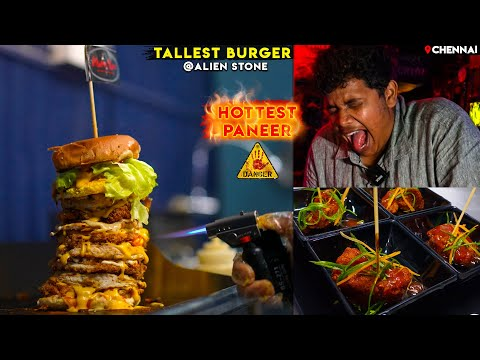
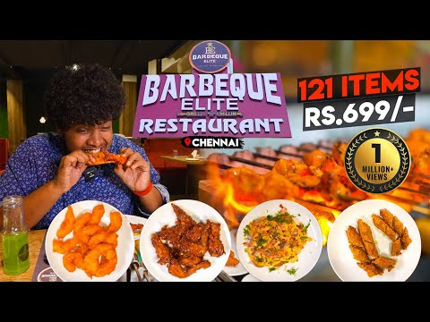
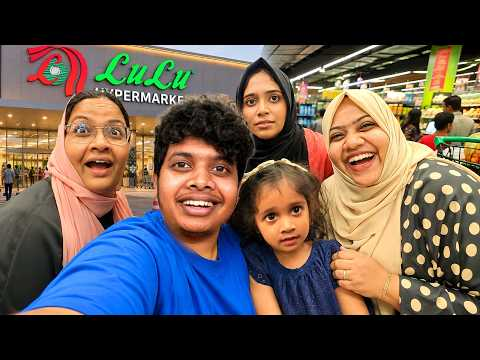

Madurai flavours.
A Chennai detour.
Shree Konar Vilas · A place to begin when you’re in the mood for a Tamil food story.
வணக்கம்! COME ON IN. THERE’S ROOM FOR EVERYONE.
The places you’ve watched. The dishes you’ve wondered about. The stories that feel like home. A little more of the world of Irfan’s View, just for you.
01 / SOMETHING DELICIOUS
Turn “Where is this, bro?” into your next food detour. A few places from the videos, with the original stories close by.
Shree Konar Vilas · A place to begin when you’re in the mood for a Tamil food story.

Alien Stone · Tower burgers and crispy chicken from an invited tasting in the source video.

Barbeque Elite · Watch the tasting, find the source location, then make a plan of your own.
From the video archive. Locations are approximate; check current hours before a visit.
Explore the working food map ↗02 / TAKE THE SCENIC ROUTE
Keep the wonder of the video. Add a little help for the day you finally go. A travel notebook for the curious, the dreamers, and the “one day” planners.
Sample notebook · No packages or bookings on this preview.
03 / SOMETHING THAT FEELS LIKE HOME
Some videos make you hungry. Others make you want to call Amma. Keep a little space for both.
A companion to the original video: a place for your shopping reminders, cooking notes, and the little details you want to remember.
Companion preview. Ingredients and method await creator review.
04 / HERE FOR MORE THAN THE FOOD
For everyone who comes for a food video and stays for the familiar company. A little corner of everyday life.

EVERYDAY STORIES / 03 NOV 2026
A LITTLE LETTER
A food find, a story to revisit, and a little inspiration for the weekend. The kind of email you’d actually look forward to.
Editorial sample · Sign-ups aren’t open yet.
05 / FOR THE “WHICH ONE IS THAT?” MOMENTS
The story behind a product, without the treasure hunt through the comments. Details first. Decisions at your pace.
AT HOME / PRODUCT COMPANION PREVIEW
Revisit the Dream Refrigerator video, then use a practical buying checklist. Model details, current prices, and supported offers would be verified before launch.
Any future paid partnership would be labelled. Every offer would have a real support route.
06 / GOOD THINGS ARE BETTER SHARED
Small ways to make this world your own. No membership needed to enjoy the good stuff.
Save the stops and stories that catch your eye. Your demo list lives in this tab and clears when you reload.
Imagine a small, carefully hosted food outing. A lovely afternoon, clear details, and someone responsible for every guest.
A peek at how saved places and travel notes could come together on your phone. Start on the web; grow with your habits.
07 / THE FOODVERSE PLAYGROUND
A food map, a little curiosity, and stories worth following.
Heading to a reviewed restaurant? “Still open? Let’s check” can help you decide if you need a plan B.
A LITTLE CURIOSITY GOES A LONG WAY
CHECK BEFORE YOU GO
Before heading to a reviewed restaurant, check whether Google still lists it as operating and decide if you need a plan B. Pick a restaurant from the food trail, or enter another one's name and approximate coordinates. We search within 1.5 km and show Google's reported business status and hours. Checking sends your query to Google.
Based on Google's public listing data, which can lag real-world changes. This is not a legal determination of operating status; call ahead to confirm. Hours shown are Google's reported weekly schedule, not a live "open now" check.
THE FOOD MAP / CHENNAI EDITION
Restaurant stories to start with.
Pick a place. Press play.
Head out.
CHENNAI / YOUR NEXT FOOD DETOUR
Find a place from the food trail and follow its original video. The map loads only when you choose.

Your location stays off until you choose Near me.
OPTION 01 / FREE GOOGLE PREVIEW
A little hungry? Pick a stop and explore its Google map, then watch Irfan’s original review. Google may display ads.
Search and distance choices update the restaurant chooser. Near me sorts the choices; it does not center this free map on your coordinates. Use Center on my location inside this preview to share your location with Google and center the free map. Google's place match may differ from the approximate CSV pin.
IRFAN'S REVIEW / TWO WAYS TO EXPLORE
Try either option below. Each loads only when you choose it. The free preview works without setup; no payment is taken on this page.
Dynamic Maps: eligible India accounts get 70,000 free loads/month, then US$2.10 per 1,000 through 5 million. Global: 10,000 free, then US$7 per 1,000 through 100,000. Taxes and later tiers vary. India pricing · Global pricing. Checked 2 November 2026.
A starting point, not a verdict. Sentiments are editorial readings of video descriptions, not Google ratings. Approximate pins are marked; check the original location before travelling.
A LITTLE MORE OF WHAT BRINGS US TOGETHER
A place to return to after the video ends. For the next meal, the someday trip, the familiar stories, and the little discoveries worth sharing. A private collaboration proposal for Irfan’s View.
Explore Irfan’s View on YouTube ↗